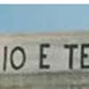

petek, 10. april 2009.
Muško i žensko i vikend do poslednjeg daha
 OK, ma šta vi mislili (a o tome možete slobodno nešto i reći), naslov ovog posta odnosi se na filmove Žan Lik Godara:
OK, ma šta vi mislili (a o tome možete slobodno nešto i reći), naslov ovog posta odnosi se na filmove Žan Lik Godara:
- Muški rod-ženski rod (Masculin feminin),
- Vikend,
- Do poslednjeg daha (À bout de souffle).
ãetrtek, 15. januar 2009.
Tri metra iznad neba

Priča o životu ove knjige zanimljiva je kao i uverljivo i zanimljivo napisan sadržaj knjige:
Moća je pokušao da je objavi na početku 90ih, niko nije bio zainteresovan, objavio je sam u tri hiljade primeraka, ubrzo se rasprodala, a onda u fotokopijama krenula da kruži među mladim Italijanima.
sreda, 16. julij 2008.
Pet stvari o Atini
"Prvo što sam primetila jeste da nisam imala potrebu da ujedam.
Trotoar je širok i čist, i nema nikakve šanse da ću naleteti na živo biće, kola, banderu ili nešto tako. Još su i svetla bila optimalna, kao i temperatura. A izmedju kolovoznih traka su palme."
Ovo je iz ranije objavljenog posta.
ponedeljek, 24. december 2007.
Closer
ponedeljek, 19. november 2007.
8+8+8
ponedeljek, 29. oktober 2007.
Srpski Reader's Digest
ãetrtek, 25. oktober 2007.
Odlazak u legendu
ponedeljek, 22. oktober 2007.
Čitalački dan
nedelja, 9. september 2007.
Žedni putnik
nedelja, 26. avgust 2007.
Beograd, 1993.
petek, 17. avgust 2007.
Dajte i meni toga
ponedeljek, 13. avgust 2007.
Danguba, 1997.
ponedeljek, 30. julij 2007.
Barselona, Balkan, i knjige
petek, 20. julij 2007.
Klincijada '07.
torek, 3. julij 2007.
Interfest
nedelja, 10. junij 2007.
Balkanske teme i drame
sreda, 9. maj 2007.
Goodbye Teens
nedelja, 4. marec 2007.
Šezdesetih...
sreda, 10. januar 2007.
What dreams are made of?
ponedeljek, 25. december 2006.
The Godfather of Soul
ponedeljek, 18. december 2006.
Putovanje - Dva načina
ponedeljek, 11. december 2006.
Godišnje liste
torek, 28. november 2006.
Ett Herrans Liv
sobota, 25. november 2006.
Beograd, 1995
ponedeljek, 20. november 2006.
Ko je prvi video tehno?
petek, 17. november 2006.
Beograd, 1994
ponedeljek, 13. november 2006.
Pisci. Tri čuda
sreda, 18. oktober 2006.
O dve nagrade
petek, 6. oktober 2006.
6. Oktobar
petek, 8. september 2006.
Jelena Janković Televized
ãetrtek, 31. avgust 2006.
Omiljene jazz ploče I
sobota, 26. avgust 2006.
High School Reunion
ãetrtek, 24. avgust 2006.
Šampanjaste vesti
ãetrtek, 17. avgust 2006.
Turning Torso
petek, 11. avgust 2006.
Good old time(r)s
nedelja, 6. avgust 2006.
06. Avgust 1945.
ponedeljek, 24. julij 2006.
Tesla is not dead
petek, 21. julij 2006.
Sav taj Jazz
ãetrtek, 13. julij 2006.
Pop Music, Past Tense
ponedeljek, 10. julij 2006.
EXIT 06, Hajlaselasijajajaj
sreda, 31. maj 2006.
Walk the Line
ponedeljek, 29. maj 2006.
15 dugih godina
ãetrtek, 18. maj 2006.
Finale Lige šampiona
ãetrtek, 6. april 2006.
Užasi fokus grupa...
sreda, 29. marec 2006.
Klizanje, šah, lajf
ãetrtek, 9. marec 2006.
Casa Nova Casanova
torek, 27. september 2005.
Jedna slika

 RSS feed
RSS feed
 sadržaji se objavljuju pod
sadržaji se objavljuju pod